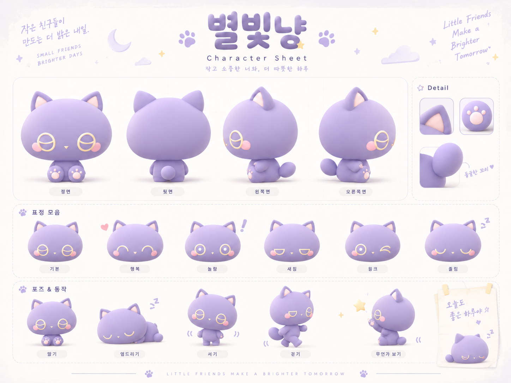
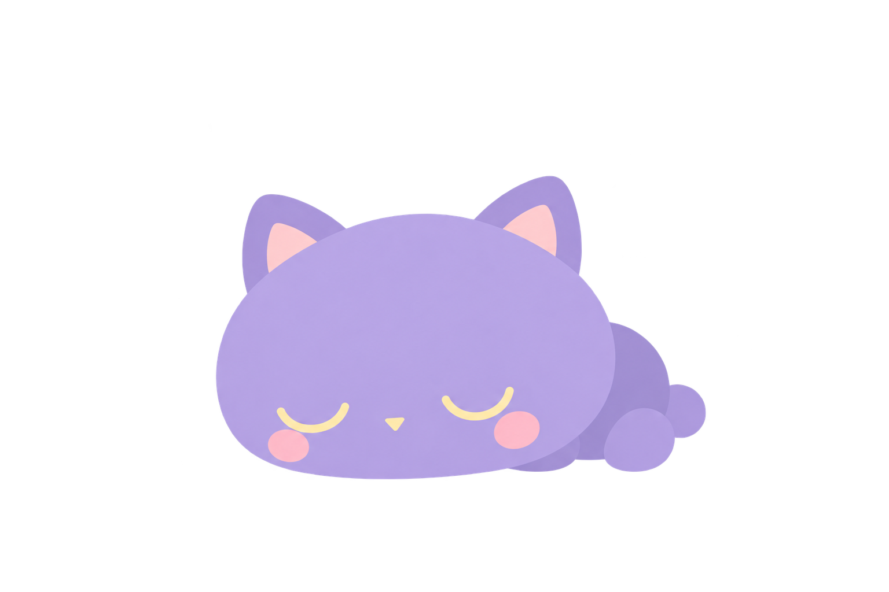

<!doctype html><html lang="ko"><meta charset="utf-8"><title>별빛냥 · 2D 엎드리기 원화</title><style>body{margin:32px;background:#f7f5fa;color:#554a66;font:16px system-ui}main{max-width:940px;margin:auto}h1{font-size:24px}.row{display:flex;flex-wrap:wrap;gap:24px}.card{background:white;border-radius:16px;padding:20px;flex:1;min-width:260px}.art{width:100%;display:block}p{line-height:1.7}.crop{width:240px;height:180px;overflow:hidden}.crop img{max-width:none;width:1448px;transform:translate(-245px,-810px)}a{color:#76599a}</style><main><h1>별빛냥 · 입체 음영을 뺀 2D 원화</h1><p>엎드린 한 장의 그림체 검수입니다. 모션 적용 전 후보입니다.</p><div class="row"><section class="card"><h2>원본의 기준 자세</h2><div class="crop"></div></section><section class="card"><h2>2D 후보</h2></section></div><p><a href="assets/rest.png">투명 PNG 원본</a> · <a href="../starlight-sheet-rest/">이전 후보 비교</a></p></main></html>
